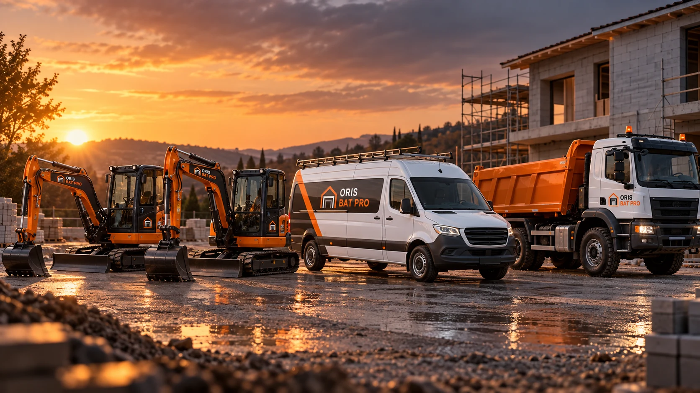

Zone d’intervention
DENNEY
AU CENTRE.
Interventions autour de Belfort et jusqu’à environ 120 km selon le type de chantier, sa durée et les contraintes d’organisation.
Rayon indicatif
JUSQU’À
120 KM.
La distance seule ne suffit pas pour confirmer un déplacement. Un chantier plus important peut justifier un trajet plus long qu’une petite intervention.
DenneyBelfortHéricourtMontbéliardDelleSud AlsaceHaute-SaôneDoubs